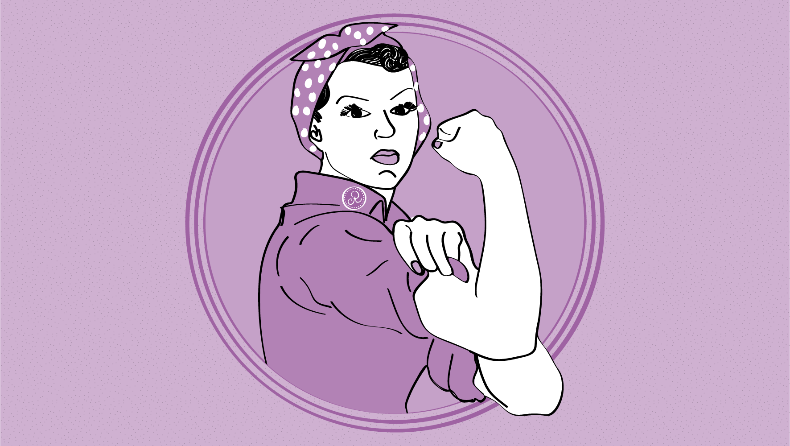

8 DE MARZO
Dende fai mais de 100 anos, o 8 de Marzo e un dos días que celebra os dereitos conquistados polas mulleres en todos os ámbitos e conmemora a larga historia de loitas e sacrificios para conseguilos.Na actualidade, durante esta xornada, organizanse marchas e manifestacións en todo o mundo para denunciar que todavía queda moito camiño por percorrer ata alcanzar esta deseada igualdade entre homes e mulleres.Pois moitos datos confirman precisamente isto, que en moitos países nacer muller e un lastre social.
DATA CLAVE DA LOITA FEMINISTA
En marzo de 1857, no marco da Revolución industrial, as traballadoras dunha fábrica téxtil de Nova York sairon á rúa a protestar en masa polas duras condicións de traballo.Se ben era certo que en ese momento as condicións laborais de todos os traballadores eran durísimas, e as mulleres recibian menos salario que os homes facendo o mesmo traballo.As protestas terminaron coa intervención violenta da policía contra as manifestantes, pero aquela manifestación sentou un primer precedente gracias a súa gran repercusión.En 1907 tuvo lugar a primeira Conferencia Internacional de Mulleres Socialistas en Stuttgart, Alemania, liderada por Clara Zetkin, onde se fundou a Intercionalidade Socialista de Mulleres. Un dos primeiro obxetivos que perseguían era o sufraxio femenino.